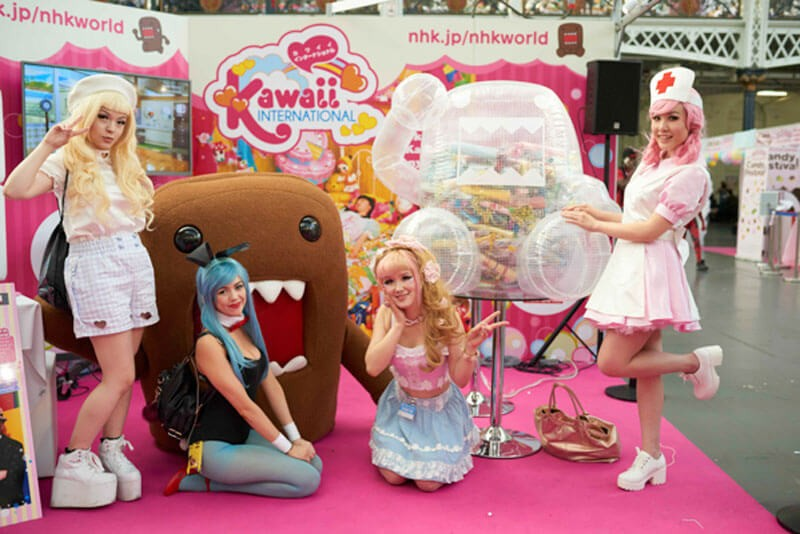

Our week of colourful cosplay and kawaii celebrations at Hyper Japan with NHK WORLD TV
Last week, the team tpr had great fun at Hyper Japan, the festival celebrating all things Japanese at Olympia, where we enjoyed learning lots about Japanese culture, from beautiful kimonos to delicious takoyaki ('octopus balls' – trust us, they taste better than they sound).
We were working with NHK, Japan's English-language broadcaster, who were visiting London to film for NHK WORLD TV's popular fashion and culture programme, Kawaii International. Kawaii means "cute" or "innocent" and it's a growing culture in the UK, thanks in part to stars like Gwen Stefani, Nicki Manaj and Katy Perry. It's very iconic and quirky and young people in the UK are fast discovering the movement as a means of self-expression.
NHK WORLD TV's London trip kicked off with the UK launch of a global art project by renowned Japanese artist and king of kawaii, Sebastian Masuda – the man behind the opening sequence of Kawaii International. Sebastian Masuda and NHK WORLD TV collaborated to create a colourful TIME AFTER TIME CAPSULE in the shape of NHK's mascot Domo, which was unveiled last Wednesday at Camden's North Yard, the perfect cool London location.
The event was a chance for members of the public to write kawaii-themed messages to their future selves to place in the capsule, which will be unveiled at the 2020 Tokyo Olympics. We were joined by fans from all over the UK for this workshop and were astonished by the creativity that was put into both the participants' outfits and their notes for the future. And yes – we couldn't resist creating our own.
This lead up to the exciting series of events at Hyper Japan over the weekend. While the TIME AFTER TIME CAPSULE continued, we were joined by fashion designer and internet sensation, Beckii Cruel, reporting at the festival for a special episode of Kawaii International that will be broadcast on August 27.
You might recognise Beckii from a BBC Three documentary a few years ago called Beckii: Schoolgirl Superstar at 14 which followed the teen as she rose to stardom in Tokyo. Beckii's now recognised as a global kawaii-leader and trend setter with her own fashion label and online subscription box service. Beckii spoke to journalists from Vice and Dazed, Love Japan and MyM and we were really impressed by her maturity, business acumen and articulacy on topics from female body image to the pressures of becoming famous at such a young age.
On Sunday, Beckii joined NHK WORLD TV's beloved mascot on the festival's main stage with a dozen other kawaii enthusiasts to perform the UK debut of Domobics, a fun new form of aerobics with Domo. We've never seen anything like it but the crowd loved the dance with visitors thronging to the NHK WORLD booth to learn the moves (we're still practising).
At the festival, NHK were also debuting their new food website, JAPANESE FOOD, showcasing a selection of delicious recipes from NHK WORLD TV's food programmes, including Dining with the Chef and Let's Cook Japanese. The platform is beautifully put together and packed with inspirational tips and ideas – we've loved exploring it and trying things out. Recipes are being added everyday so by 2017 it's set to be the world's biggest resource about Japanese food.
It was an action packed week of colours, creativity and kawaii and we can't wait for next year. Please get in touch if you would like any more information about NHK's programmes.